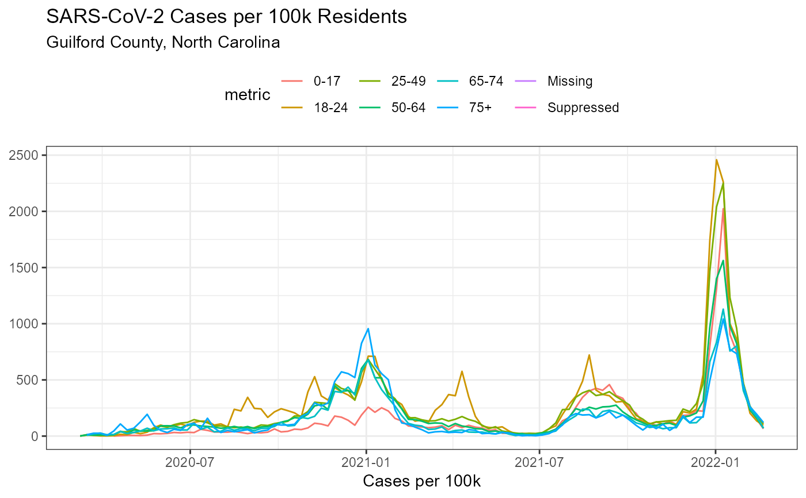

R/get_covid_county_demographics.R
get_county_covid_demographics.RdRetrieve Latest Demographic data from NC DHHS.
get_county_covid_demographics(
demographic = "age_group",
region = NULL,
add_population = TRUE
)a string, one of age, k_12, ethnicity, gender, or race
a string vector, could a string or vector of the counties of interest
a boolean, TRUE to add the population estimates (may not be available for all demographics)
library(ggplot2)
library(data.table)
#> Warning: package 'data.table' was built under R version 4.0.5
#>
#> Attaching package: 'data.table'
#> The following objects are masked from 'package:dplyr':
#>
#> between, first, last
out <- get_county_covid_demographics(region = "Guilford", demographic = "age")
#> Data valid as of: 2021-11-21
#> Use with caution.
out[,per_capita:=cases/(population/100000)]
#> metric county week_of demographic cases deaths category
#> 1: 0-17 Guilford 2020-04-12 age_group 1 0 age
#> 2: 0-17 Guilford 2020-04-26 age_group 7 0 age
#> 3: 0-17 Guilford 2020-05-31 age_group 27 0 age
#> 4: 0-17 Guilford 2020-06-21 age_group 34 0 age
#> 5: 0-17 Guilford 2020-08-23 age_group 41 0 age
#> ---
#> 643: Suppressed Guilford 2021-05-30 age_group 0 1 <NA>
#> 644: Suppressed Guilford 2021-06-13 age_group 0 1 <NA>
#> 645: Suppressed Guilford 2021-06-20 age_group 0 1 <NA>
#> 646: Suppressed Guilford 2021-07-04 age_group 0 1 <NA>
#> 647: Suppressed Guilford 2021-06-27 age_group 0 2 <NA>
#> population per_capita
#> 1: 117830 0.8486803
#> 2: 117830 5.9407621
#> 3: 117830 22.9143682
#> 4: 117830 28.8551303
#> 5: 117830 34.7958924
#> ---
#> 643: NA NA
#> 644: NA NA
#> 645: NA NA
#> 646: NA NA
#> 647: NA NA
ggplot(out, aes(week_of, per_capita, colour = metric))+
geom_line()+
theme_bw()+
theme(legend.position = "top")+
labs(
title = "SARS-CoV-2 Cases per 100k Residents",
subtitle = "Guilford County, North Carolina",
x = "Cases per 100k",
y = NULL
)
#> Warning: Removed 115 row(s) containing missing values (geom_path).
